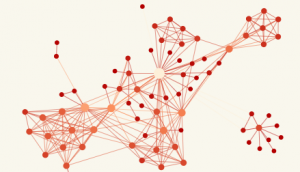

<div id="research" class="section bg-light py-5">
    <div class="container">
        <div class="row">
            <div class="col-md-4">
                <h2 class="section-title">Research</h2>
            </div>
            <div class="col-md-1"></div>
            <div class="col-md-7">
                <!-- Current Research -->
                <h3>Current Research</h3>
                <br>
                <div class="research-item">
                    
                    <div class="content">
                        <h4>Differentiating Concept Drift from Anomalies</h4>
                        <p>Research introduction context. Research introduction context. Research introduction context.
                            Research
                            introduction context. Research introduction context. Research introduction context.</p>
                    </div>
                </div>

                <div class="research-item">
                    
                    <div class="content">
                        <h4>Data integrity over Graphs: OFDs, OGKs, TGFDs (verification, discovery)
                        </h4>
                        <p>Research introduction context. Research introduction context. Research introduction context.
                            Research
                            introduction context. Research introduction context. Research introduction context.</p>
                    </div>
                </div>

                <div class="research-item">
                    
                    <div class="content">
                        <h4>Learning Normal vs. Abnormal Data Changes</h4>
                        <p>Research introduction context. Research introduction context. Research introduction context.
                            Research
                            introduction context. Research introduction context. Research introduction context.</p>
                    </div>
                </div>

                <div class="research-item">
                    
                    <div class="content">
                        <h4>A Data System for Blood Monitoring</h4>
                        <p>According to the 2020 Auditor General Report on Blood Management and Safety, hospitals are
                            using a
                            variety of information systems to monitor blood inventory, usage, and patient clinical data.
                            This
                            heterogeneity has led to disparate, and disjoint systems hindering data sharing among
                            hospitals,
                            Canadian
                            Blood Services (CBS), and government. Furthermore, these localized views and limited data
                            exchange pose
                            challenges to meet current and predicted demand across hospitals, and to ensure that usage
                            of blood
                            components and products adhere to provincial guidelines. Greater transparency is needed to
                            understand
                            the
                            safety issues and determinate factors around blood usage. In this project, we develop a data
                            system to
                            understand how blood components and products are used to treat specific conditions,
                            follow-on prognosis,
                            and clinical outcomes with respect to patient demographics.</p>
                    </div>
                </div>

                <div class="research-item">
                    
                    <div class="content">
                        <h4>Evaluating Data Influence in Vertical Federated Learning</h4>
                        <p>Research introduction context. Research introduction context. Research introduction context.
                            Research
                            introduction context. Research introduction context. Research introduction context.</p>
                    </div>
                </div>

                <div class="research-item">
                    
                    <div class="content">
                        <h4>Improving Data Currency in Data Systems</h4>
                        <p>Research introduction context. Research introduction context. Research introduction context.
                            Research
                            introduction context. Research introduction context. Research introduction context.</p>
                    </div>
                </div>

                <div class="research-item">
                    
                    <div class="content">
                        <h4>Data Preparation and SQL Understanding in LLMs</h4>
                        <p>Research introduction context. Research introduction context. Research introduction context.
                            Research
                            introduction context. Research introduction context. Research introduction context.</p>
                    </div>
                </div>

                <!-- Past Research -->
                <h3>Past Projects</h3>
                <ul>
                    <li>Contextual data cleaning and ontological dependencies</li>
                    <li>Data-driven multimodal positioning and tracking in indoor environments</li>
                    <li>New data quality metrics for Watson Analytics (collaboration with IBM)</li>
                    <li><a href="http://dblab.cs.toronto.edu/project/CIDAQ/">Managing Constraints for improved data
                            quality</a>
                    </li>
                    <li><a href="http://dblab.cs.toronto.edu/project/CIDAQ/">Discovering data quality rules</a></li>
                    <li><a href="http://dblab.cs.toronto.edu/project/LAD/">Learning attribute dictionaries</a></li>
                    <li><a href="http://dblab.cs.toronto.edu/project/stringer/">Stringer: Privacy-Aware Data cleaning
                        </a> </li>
                    <li><a href="http://www.alphaworks.ibm.com/tech/xmlindexadvisor/">XML Index Advisor</a></li>
                    <li><a href="http://www.blogscope.net/">Blogscope: Analysis and visualization tool for the
                            blogosphere</a>
                    </li>
                </ul>


            </div>
        </div>
    </div>
</div>